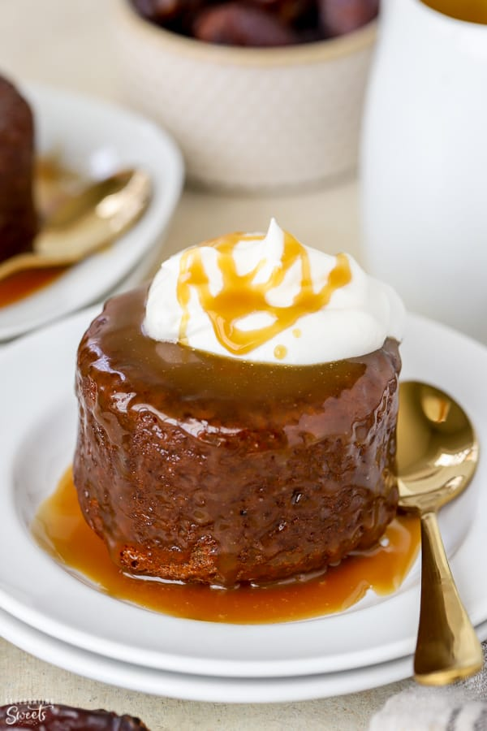

Sticky Toffee Pudding

Description
Sticky Toffee Pudding is a rich and comforting dessert you will love! These soft and sweet brown sugar sponge cakes are soaked in a warm toffee sauce and served with whipped cream or ice cream. The perfect dessert for holidays or celebrations.
Ingredients
Cake
- 7 oz medjool dates (approximately 7-10 dates)
- ¾ cup boiling water
- 1 teaspoon baking soda
- 5 tablespoons unsalted butter, softened
- 2 tablespoons unsulphured molasses
- ⅓ cup brown sugar, packed
- 2 large eggs*, at room temperature
- 1 teaspoon pure vanilla extract
- 1 ¼ cups all purpose flour
- 1 teaspoon baking powder
- ¼ teaspoon salt
Toffee sauce
- ½ cup unsalted butter
- ¾ cup heavy cream
- ¾ cup brown sugar, packed
- 2 teaspoons unsulphured molasses (teaspoons, not tablespoons)
- pinch salt
- ½ teaspoon pure vanilla extract
Steps
Cake
- Preheat oven to 350°F.
- Finely chop the dates. You should have about 1 cup loosely packed. Place the dates in a bowl and cover with boiling water and sprinkle with baking soda. Stir, then allow the mixture to sit undisturbed for 20 minutes.
- Meanwhile, using a hand mixer or stand mixer fitted with the paddle attachment, beat butter, brown sugar, and molasses until creamy and combined. Add the eggs, one at a time, beating well between each addition and scraping the sides and bottom of the bowl as needed. Beat in the vanilla.
- In a separate bowl combine flour, baking powder, and salt. Add the flour mixture into the butter mixture and beat until combined, scraping the sides and bottom of the bowl as needed.
- After the dates have soaked for 20 minutes, mash or puree the dates along with the liquid. If the dates you used were moist you should be able to mash them easily with a fork. If the dates were really dry it will likely be easier to use an immersion blender or small food processor to puree (they don't have to be completely smooth). Transfer all of the date mixture into the cake batter and beat until combined.
- Grease ramekins or a 12-count muffin tin. Transfer the batter to the prepared pans and smooth the top. Bake until a toothpick inserted into the center comes out clean. Depending on the size of your ramekins this can be anywhere from 20-25 minutes. Be careful not to overbake. Place on a wire rack to cool.
Toffee sauce:
- In a medium saucepan, melt the butter. Add the cream, brown sugar, molasses, and salt. Bring the mixture to a simmer, whisking occasionally, and simmer for 5-8 minutes. Whisk in vanilla and set aside to cool slightly; it will thicken as it cools.
Assembly and serving
- While the cakes are still a little bit warm, remove them from the ramekins/muffin tin and place them on a baking sheet or a piece of foil or parchment paper. Note: the cakes will likely have a dome on top. If desired, you can use a serrated knife to level off the top.
- Brush all sides of the cakes with the toffee sauce, reserving the rest of the sauce for serving.
- Serve the cake warm, drizzled with extra toffee sauce. Garnish with heavy cream, whipped cream, ice cream, and/or a sprinkle of flaky sea salt.